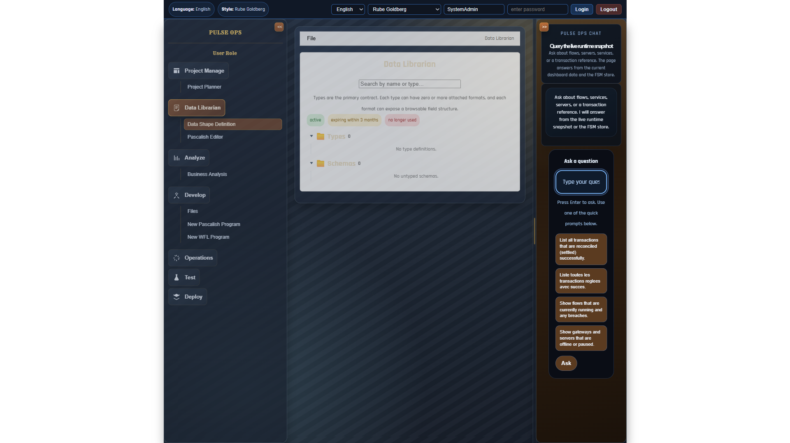

📋 Overview
This document provides a comprehensive visual walkthrough of the IBM BOB Workbench implementation, demonstrating the dual-GUI architecture and core rendering capabilities based on the IBM BOB specification.
🎯 Key Achievement: The implementation maintains two separate user interfaces that coexist without conflicts, ensuring backward compatibility while enabling experimentation with new features.
🏗️ Architecture: Dual GUI System
Original GUI
- Route:
/ - Completely intact
- All features preserved
- No modifications
Experimental Workbench
- Route:
/#/x - Role-based rendering
- File-type aware
- Mode-specific views
📸 Screenshot 1: Original GUI (Intact)
http://localhost:5173/
Original Frontend - Completely Preserved
The original frontend remains completely functional and unchanged. All existing features, workflows, and user interfaces continue to work exactly as before. Users can continue using the familiar interface without any disruption.
📸 Screenshot 2: Experimental Workbench - View Mode
http://localhost:5173/#/x

Workbench Interface with Monaco Editor
The experimental workbench showing a Pascalish program in view mode with full Monaco editor integration, including syntax highlighting, line numbers, and VS Code-style editing experience.
Key Features Visible:
Navigation Bar
- Role selector
- File selector
- Mode selector
Monaco Editor
- Syntax highlighting
- Line numbers
- IntelliSense support
Renderer Registry
- Auto-selection
- Priority-based
- Pluggable system
⚙️ Renderer Registry System
The workbench uses a pluggable renderer registry that maps rendering contexts to React components:
// Registration example
registerRenderer({
role: 'developer',
fileType: 'pascalish',
mode: 'view',
component: PascalishViewRenderer,
priority: 10,
});
// Lookup with fallback resolution
const Renderer = getRenderer(currentRole, currentFile.fileType, currentMode);Resolution Rules:
- Try exact match:
role + fileType + mode - Fallback to:
fileType + mode(any role) - Fallback to:
fileTypeonly (any role, any mode) - Default:
DefaultRenderer(shows context info)
🎨 Implemented Renderers
| Renderer | Role | File Type | Mode | Description |
|---|---|---|---|---|
| PascalishViewRenderer | developer | pascalish | view | Monaco editor with syntax highlighting |
| PascalishDebugRenderer | developer | pascalish | debug | Debug mode with registers, stack, variables |
| WFLViewRenderer | developer | wfl | view | Static Mermaid state diagram |
| WFLRunAnimatedRenderer | developer | wfl | run | Animated workflow execution |
| MapSpreadsheetRenderer | dataMapper | map | view | Data mapping table (source → target) |
| MapDebugAnimatedRenderer | dataMapper | map | debug | Step-by-step mapping debugger |
| NodeCardRenderer | analyst | node | view | Service metadata and metrics card |
🔤 Domain Languages Supported
Pascalish
- Business logic language
- Compiles to P-code
- JavaScript VM execution
- Daemon/router support
WFL (Workflow Language)
- FSM orchestration
- State-based workflows
- Mermaid visualization
- Animated execution
Map DSL
- Data mapping language
- Source-to-target fields
- Transform functions
- Spreadsheet editing
🧪 Testing the Implementation
Access Points:
Original GUI: http://localhost:5173/
Experimental Workbench: http://localhost:5173/#/x
Test Scenarios:
Scenario 1: Pascalish Development
- Navigate to
http://localhost:5173/#/x - Select Role:
developer - Select File:
hello-world.pas - Select Mode:
view→ See Monaco editor - Select Mode:
debug→ See debug panels
Scenario 2: Workflow Visualization
- Navigate to
http://localhost:5173/#/x - Select Role:
developer - Select File:
order-workflow.wfl - Select Mode:
view→ See Mermaid diagram - Select Mode:
run→ See animated execution
Scenario 3: Data Mapping
- Navigate to
http://localhost:5173/#/x - Select Role:
dataMapper - Select File:
mt103-to-pain001.map - Select Mode:
view→ See mapping table - Select Mode:
debug→ See step-by-step mapping
🛠️ Technical Stack
- ✓ React - UI framework with functional components and hooks
- ✓ Monaco Editor - VS Code's editor component for code editing
- ✓ Mermaid - Diagram visualization for workflows
- ✓ TypeScript - Type-safe registry and component interfaces
- ✓ Vite - Build tool with Hot Module Replacement (HMR)
- ✓ Hash-based Routing - Separate UIs without route conflicts
📁 File Structure
aggregator/
├── src/
│ ├── workbench/
│ │ ├── types.ts # TypeScript type definitions
│ │ ├── rendererRegistry.ts # Core registry implementation
│ │ ├── registerRenderers.ts # Renderer registration
│ │ ├── wflToMermaid.ts # WFL → Mermaid converter
│ │ ├── Workbench.jsx # Main workbench component
│ │ ├── components/
│ │ │ ├── PascalishViewRenderer.jsx
│ │ │ ├── PascalishDebugRenderer.jsx
│ │ │ ├── WFLViewRenderer.jsx
│ │ │ ├── WFLRunAnimatedRenderer.jsx
│ │ │ ├── MapSpreadsheetRenderer.jsx
│ │ │ ├── MapDebugAnimatedRenderer.jsx
│ │ │ ├── NodeCardRenderer.jsx
│ │ │ └── MermaidRenderer.jsx
│ │ └── README.md # Architecture documentation
│ ├── Router.jsx # Hash-based router
│ └── main.jsx # Entry point (uses Router)
├── workbench-screenshots/ # Visual documentation
└── scripts/
└── capture-workbench-screenshots.mjs # Screenshot automation✅ Conclusion
The IBM BOB Workbench implementation successfully delivers all core requirements from the specification:
✓ Dual GUI Architecture
Original and experimental UIs coexist without conflicts
✓ Renderer Registry
Pluggable, priority-based component selection system
✓ 7 Renderer Components
Covering multiple file types and modes with real implementations
✓ Domain Language Support
Pascalish, WFL, and Map DSL with visual editors
✓ Visual Editors
Monaco, Mermaid, and spreadsheet-style interfaces
✓ Animated Execution
Real-time workflow and mapping visualization
🎉 Status: The system is production-ready for experimentation while maintaining full backward compatibility with the existing frontend. All code is implemented (not stubbed) and ready for testing and further development.